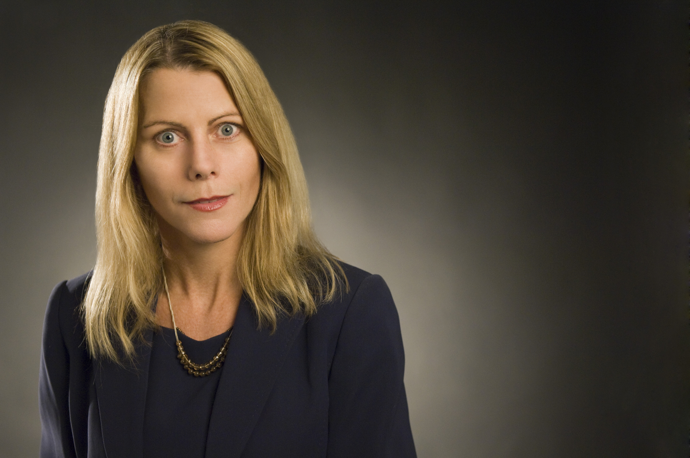
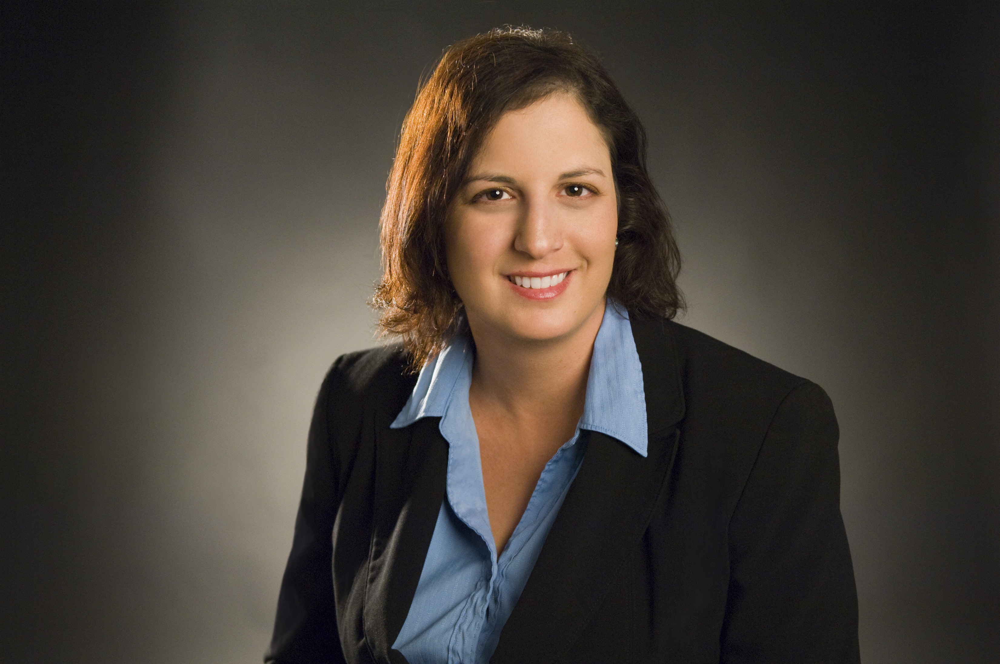

|  | Darlene Cole, Chief Executive Officer / Director of Research Darlene Cole has an M.S. degree in Industrial-Organizational Psychology and over 20 years of experience supervising broad-scale research projects. Over the past nine years, she has worked extensively with more than 50 education reform programs, including over 30 GEAR UP programs, to optimize their evaluation and data systems management capacity. Ms. Cole created the COMPASS online data management system to facilitate GEAR UP program evaluation processes. She has directed the CoBro Consulting team for over eight years. Moreover, Ms. Cole had served as co-chair for the CCREC Research & Evaluation Committee for 18 months and has just been re-elected to serve another year in this capacity. |
Urban Pelicon, Chief Information Officer Urban Pelicon has extensive experience supervising teams of programmers in designing and developing database systems to deliver maximum utility. Over the past eight years, he has specialized in developing and managing large-scale data management and reporting systems for a variety of GEAR UP statewide and partnership programs. Mr. Pelicon has designed and developed such systems in both web-based and stand-alone modalities, based on particular client needs and capacities. Currently, he manages the development and technical support for the online COMPASS and COMPASSMatch data management systems, and oversees all aspects of data management, integrity, and security. |
|  | Keren Brooks, Chief Research Analyst and Principal Investigator Over the past 16 years, Keren Brooks has conducted program evaluation and statistical data analysis in the areas of education reform and academic institutional research. Ms. Brooks has an M.S. degree in Industrial-Organizational Psychology and extensive experience managing and analyzing large-scale databases, conducting comprehensive academic program evaluations, and assisting with the design of software systems for optimal data management and evaluation functionality. For more than eight years, she has developed and supervised GEAR UP program research design, survey projects, statistical data analyses, and outcomes reporting for CoBro Consulting. She has been a member of the American Evaluation Association since 2007. |
Carina Davio, Director of Client Relations Carina Davio has extensive knowledge and experience with the GEAR UP program, including serving as Director of the GEAR UP statewide program in Idaho. As Director, she obtained firsthand experience using the COMPASS System and CoBro evaluation services in a GEAR UP setting. Ms. Davio has completed six Annual Performance Reports submitted to the US Department of Education, and in 2011 independently wrote, and was awarded, a $22 million Statewide GEAR UP grant. Ms. Davio also has experience in partner development, external and internal communication, and training on GEAR UP and college access related topics. |
|
Sofia Andrade, Research Analyst Sofia Andrade has conducted large-scale jobs and organizational analyses, statistical data analysis, test development and validation, and organizational development for large public and private organizations over the last 13 years. Ms. Andrade has an M.S. degree in Industrial-Organizational Psychology and has managed personnel research, test development and validation, and organizational development initiatives in the government, transportation, and energy industries. Her responsibilities for CoBro Consulting include performing survey data analysis and reporting, and assisting with other statistical data analyses and outcomes reporting for client projects. Jamie Killam, Survey Coordinator Jamie Killam coordinates and processes incoming survey data for CoBro Consulting clients. Her responsibilities include tracking and logging all incoming paper surveys (>35,000/year), creating scanning templates of paper surveys, scanning all paper surveys into electronic format, and validating electronic survey data. Ms. Killam also assists with reporting survey data as needed. Dhruv Malhotra, Senior Programmer Dhruv Malhotra brings many years of experience in the design and development of web based business applications to the CoBro Consulting team. Mr. Malhotra excels in using client/server technologies and specializations in database development and integration, administrating user permissions, and managing systems architecture. Mr. Malhotra has vast experience in .Net, iOS development, Android development, Php, Python, Java, PERL, SQL, and other various programming languages. He has consulted with clients from Fortune 100 companies, the public sector including the Department of Defense, along with small companies trying to make their mark. His passion lies in service to the clients, understanding their needs, and using technology to solve business problems while creating new products and services. As CoBro Consulting's Lead Programmer, Mr. Malhotra is responsible for all aspects of programming, and troubleshooting and maintenance of the COMPASS and COMPASSMatch Systems, including development and integrity of all reporting features. He also manages and implements all system updates, and upgrades of the SQL server. Oscar Morales, Quality Control Specialist Oscar Morales has worked in customer service and support for more than 10 years. Mr. Morales works regularly with CoBro Consulting clients to obtain and verify data. He also provides quality control over data processes and transfers, and is the main contact for CoBro Consulting Technical Support. Mr. Morales is a key factor in the implementation of quality control procedures including review of all incoming data in detail for accuracy and completeness, continuously determining modifications to optimize the functionality of the COMPASS and COMPASSMatch systems, and working with the Data Management / IT team to implement processes to ensure efficient and effective data transfer. Craig Saiz, Data Specialist Craig Saiz brings over 10 years of experience in IT to CoBro Consulting team. He specializes in computer programming, computer repair, office application training, and software solutions analysis for business. He is an integral part of the CoBro Consulting team, and is responsible for a variety of IT tasks and projects for our GEAR UP clients. Specifically, Mr. Saiz performs monthly quality assurance measures to validate client data, designs and implements Microsoft Access database with Visual Basic enhancements to record new client data files, and prepares school district data for reporting. Steve Rodriguez, |